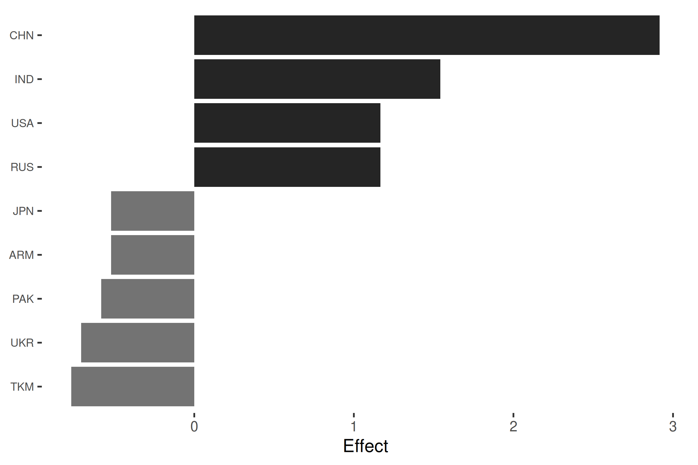
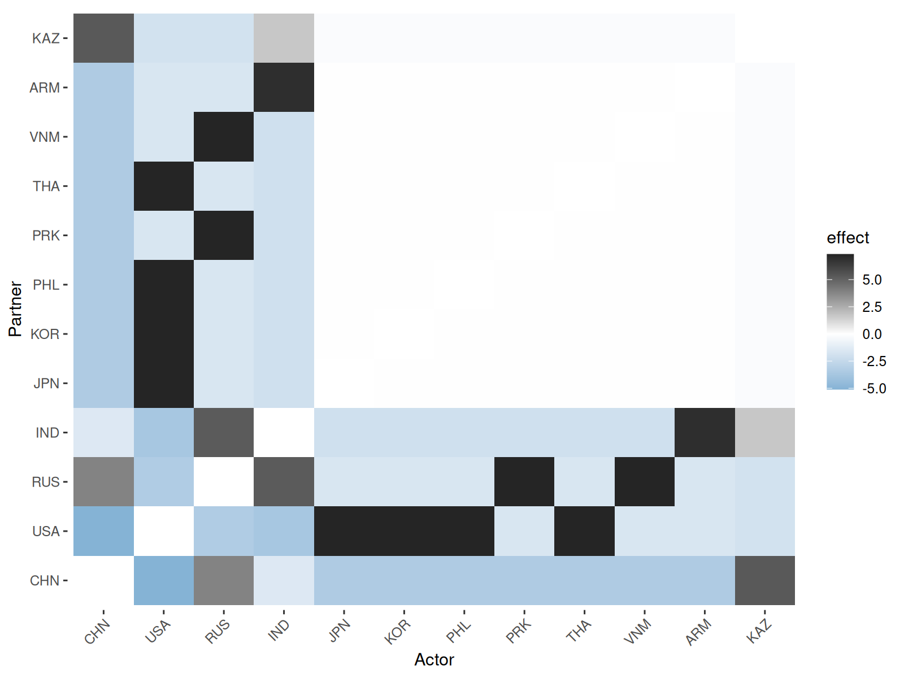
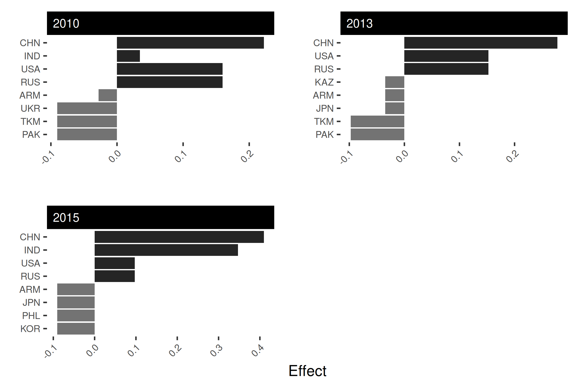
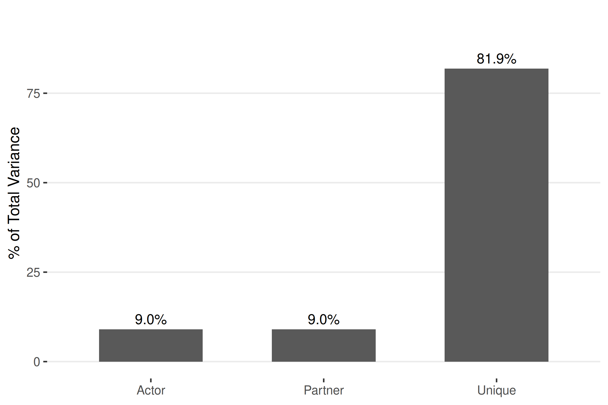

Social Relations Models for Network Analysis
Cassy Dorff, Shahryar Minhas, and Tosin Salau
2026-03-29
Source:vignettes/srm-overview.Rmd
srm-overview.RmdPackage Overview
This vignette introduces the srm package, which
estimates social relations models for network data. It breaks down and
analyzes networks into nodal and dyadic dependencies and allows users to
understand actor, partner, and dyadic effects in network data (Dorff and
Ward, 2013; Dorff and Minhas, 2017).
What users can do:
Identify the most active actors in the network - both in terms of sender and receiver patterns. Users can identify which actors are more active than expected after accounting for overall network structure and partner characteristics.
Identify overall network patterns where users can separate systematic actor behaviors from relationship-specific effects.
Generate specific summary statistics for the network data that can reveal whether active actors are also active receivers.
Create visualizations to visualize actor behaviors and their relationship-specific patterns.
In comparison to netify, which provides
general network statistics and visualizations, the srm package helps
users break down network relationships allowing for deeper analysis.
With srm, users are able to identify which actors are more
or less active than typical and helps users explore why, relationally,
some connections are stronger or weaker than expected. While
netify focuses on overall network patterns, srm centers on
explaining the individual behaviors and relationships that drive those
patterns.
Note: This vignette uses symmetric (undirected)
network data, which constrains the SRM decomposition. If you have
directed data where sender and receiver roles are
distinct, the pipeline vignette provides a more complete
walkthrough with all five SRM components. For bipartite
(two-mode) networks, see the bipartite vignette.
Prepare Data
We will make use of data from ATOP (Alliance Treaty Obligations and
Provisions) to demonstrate how to use the srm package. The
data can be downloaded at http://www.atopdata.org. For this tutorial, we have
selected the atop5_1dy dataset and focus on military
security consultation agreements from 2010 to 2018 involving countries
in the broader East and Central Asian region. The dataset includes 18
countries: the East Asian core (China, India, Japan, South Korea, North
Korea, Philippines, Thailand, Vietnam) along with their consultation
treaty partners (Armenia, Kazakhstan, Kyrgyzstan, Pakistan, Russia,
Tajikistan, Turkmenistan, Ukraine, USA, Uzbekistan).
data("atop_EA")
head(atop_EA)
year country1 country2
1 2010 USA KOR
2 2011 USA KOR
3 2012 USA KOR
4 2013 USA KOR
5 2014 USA KOR
6 2015 USA KORWe will make use of the netify package to make a network
object from the ATOP data. We will create two network objects, one for
cross-sectional data and the other for longitudinal data as examples for
this vignette. Note that these consultation agreements are symmetric
(undirected) – if country A has a consultation agreement with country B,
the reverse is also true.
# cross-sectional
atop_EA_short = netify::netify(
input = atop_EA,
actor1 = 'country1',
actor2 = 'country2',
symmetric = TRUE,
sum_dyads = TRUE,
diag_to_NA = TRUE,
missing_to_zero = TRUE
)
# longitudinal
atop_EA_long = netify::netify(
input = atop_EA,
actor1 = 'country1',
actor2 = 'country2',
time = 'year',
symmetric = TRUE,
sum_dyads = TRUE,
diag_to_NA = TRUE,
missing_to_zero = TRUE
)See ?netify::netify for details on the parameters used
above. The netify function creates a network object that
can be used with the srm package. The resulting object is a
matrix for cross-sectional data and a list of matrices for longitudinal
data, where each matrix represents the network at a specific time
point.
A note on symmetric networks: Because these
consultation agreements are undirected, the resulting matrices are
symmetric. In symmetric networks, actor effects and partner effects are
identical by construction – a country’s tendency to “send” ties is the
same as its tendency to “receive” them. The SRM is most informative for
directed (asymmetric) networks where sender and receiver roles are
distinct. We use this symmetric example here for illustration, but see
the classroom dataset for an example with asymmetric data
where the full SRM decomposition is more revealing.
SRM Summary Statistics
Now that we have our network objects, we can analyze relationships in
the network via the srm package. Let’s begin by generating
summary statistics for the network data. We will look at the row means
and actor-partner covariance for the cross-sectional data.
sort(srm_stats(atop_EA_short, type = "rowmeans"), decreasing = TRUE)
[36mℹ
[39m Converting
[34m
[34m<netify>
[34m
[39m object to standard matrices.
CHN IND RUS USA KAZ KGZ TJK UZB
3.7647059 2.4705882 2.1176471 2.1176471 0.7647059 0.7647059 0.7647059 0.7647059
ARM JPN KOR PHL PRK THA VNM PAK
0.5294118 0.5294118 0.5294118 0.5294118 0.5294118 0.5294118 0.5294118 0.4705882
UKR TKM
0.3529412 0.2941176 The row means immediately reveal the most active countries: China (3.76) and India (2.47) have far more consultation agreements on average than countries like Turkmenistan (0.29) or Ukraine (0.35). Note the sharp drop-off after the top four (China, India, Russia, USA), with most countries clustered between 0.3 and 0.8.
srm_stats(atop_EA_short, type = "actor_partner_cov")
[36mℹ
[39m Converting
[34m
[34m<netify>
[34m
[39m object to standard matrices.
[1] 0.6474946The actor-partner covariance of 0.65 is positive, but this is a direct consequence of the network being symmetric: because every consultation tie is mutual, actor and partner effects are identical and the actor-partner covariance equals the actor variance by construction. In a directed network, this covariance would reveal whether active senders also tend to be active receivers; here, that question is not separable from general activity.
Let’s make use of the time argument and look at the
column means for select years in the longitudinal data. New treaties
entered the ATOP data between 2012 and 2015, so we select years that
span these changes.
yrs = c("2010", "2013", "2015")
col_means = srm_stats(atop_EA_long, type = "colmeans", time = yrs)
[36mℹ
[39m Converting
[34m
[34m<netify>
[34m
[39m object to standard matrices.With 18 countries across 3 years, the full output is large. We can compare a few key countries:
focus = c("CHN", "IND", "RUS", "USA")
sapply(col_means, function(x) round(x[focus], 2))
2010 2013 2015
CHN 0.29 0.35 0.53
IND 0.12 0.12 0.47
RUS 0.24 0.24 0.24
USA 0.24 0.24 0.24China’s consultation activity increases from 0.29 in 2010 to 0.35 in 2013 and 0.53 by 2015, reflecting new agreements entering the dataset. India holds steady at 0.12 through 2013 and then jumps to 0.47 in 2015. Russia and the USA remain stable at 0.24 throughout.
SRM Effects
We can analyze the actor, partner, and unique effects in the network
data using the srm_effects() function. The actor effect for
observation i captures how much that actor deviates from the
network average as a sender of ties. It is calculated as:
where is the row mean for actor i, is the column mean, and is the overall network mean.
Similarly, the partner effect shows how much actor i tends to receive ties above or below average:
We look at the actor effects for the cross-sectional data:
EA_actor = srm_effects(atop_EA_short, type = "actor")
[36mℹ
[39m Converting 'netify' matrix to standard matrix.
sort(EA_actor[, 1], decreasing = TRUE)
CHN IND RUS USA KAZ KGZ TJK
2.9166667 1.5416667 1.1666667 1.1666667 -0.2708333 -0.2708333 -0.2708333
UZB ARM JPN KOR PHL PRK THA
-0.2708333 -0.5208333 -0.5208333 -0.5208333 -0.5208333 -0.5208333 -0.5208333
VNM PAK UKR TKM
-0.5208333 -0.5833333 -0.7083333 -0.7708333 The actor effects show how much an actor deviates from the network average in security consultation pacts. China has the highest positive actor effect (+2.92), meaning it engages in security consultation pacts far more than the network average. Other countries such as Thailand, Japan, and Korea have negative effects (around -0.52), suggesting they participate below the network average.
We can also look at the unique effects. The unique dyadic effect is the residual after removing both actor and partner tendencies:
We run this from the srm_effects function with
type = "unique".
EA_unique = srm_effects(atop_EA_short, type = "unique")
[36mℹ
[39m Converting 'netify' matrix to standard matrix.The unique effects are an 18x18 matrix. Rather than printing the full matrix, we can identify the strongest bilateral relationships by sorting the off-diagonal values:
g_vec = EA_unique[row(EA_unique) != col(EA_unique)]
names(g_vec) = outer(
rownames(EA_unique), colnames(EA_unique), paste, sep = "-"
)[row(EA_unique) != col(EA_unique)]
head(sort(g_vec, decreasing = TRUE), 6)
USA-JPN USA-KOR USA-PHL RUS-PRK PRK-RUS VNM-RUS
7.334559 7.334559 7.334559 7.334559 7.334559 7.334559 The top unique effects all have the same value (+7.3) because the
ATOP consultation data is binary and symmetric: once actor and partner
tendencies are removed, the remaining dyadic effects are strongly
constrained. The pairs highlighted — USA-Japan, USA-Korea,
USA-Philippines, and Russia-North Korea — are the alliances that exist
despite both partners having relatively low overall activity. In a
directed, continuous-valued network, unique effects would show more
differentiation across dyads; see the pipeline vignette for
such an example.
For the longitudinal data, we extract actor effects for selected years. Because the network is symmetric, actor and partner effects are identical, so we focus on actor effects only.
EA_actor_long = srm_effects(atop_EA_long, type = "actor", time = yrs)
[36mℹ
[39m Converting one or more 'netify' matrices in the list to standard matrices.We can compare China and India’s actor effects across these three years to see how their consultation activity evolved:
sapply(EA_actor_long, function(x) round(x[c("CHN", "IND"), 1], 2))
2010 2013 2015
CHN 0.22 0.28 0.41
IND 0.03 0.03 0.35China’s actor effect grows from +0.22 in 2010 to +0.41 by 2015 as new agreements enter the data. India starts near the network average in 2010 (+0.03) and jumps to +0.35 in 2015, reflecting the same wave of new consultation agreements visible in the column means above.
Visualization
We can visualize the actor, partner, or dyadic effects using the
srm_plot function. The actor/partner effect plots show
actors sorted by the absolute magnitude of their effects, with positive
effects in dark bars and negative effects in light gray bars. The
default number of actors shown is the top 10, adjustable via the
n argument.
Things to note:
Users need to put in results from the
srm_effectsfunction as input to thesrm_plotfunction.For undirected networks, use
type = "actor"when plotting since partner effects are identical.
We look at the actor effects for the cross-sectional data:
srm_plot(EA_actor, type = "actor", n = 9)
Positive effects are shown in dark bars (right side) and negative effects in light gray bars (left side). China has the highest positive effect, engaging in military consultation obligations significantly more than the network average. Countries such as Turkmenistan have the strongest negative effects.
We can also look at the dyadic effects. When users supply the unique effects, the function returns a heatmap with a diverging color scale. Dark cells indicate stronger-than-expected relationships (positive unique effects), blue cells indicate weaker-than-expected relationships (negative unique effects), and white cells are close to what we would predict from actor tendencies alone.
srm_plot(EA_unique, type = "dyadic", n = 12)
The heatmap reveals which bilateral relationships are unusually strong or weak after controlling for each actor’s general tendencies. For example, the USA has strong military consultation relationships with Japan, Korea, and Thailand beyond what their general activity levels would predict. Most cells are white, showing that many bilateral relationships are close to what we would expect.
For the longitudinal data, we can set facet = TRUE to
compare actor effects across time periods:
srm_plot(EA_actor_long, type = "actor", facet = TRUE, time = yrs, n = 8)
The faceted plot shows how actor effects evolve over time. China consistently has the highest positive actor effect. India’s effect grows across the periods as new consultation agreements enter the data. Other countries with light gray bars have negative effects, suggesting below-average consultation activity.
Using the Unified Interface
The examples above use the original component functions
(srm_effects, srm_stats,
srm_plot). The package also provides a unified
srm() function that computes everything at once, returning
a single object with print, summary, and
plot methods. The srm() approach is more
concise for a typical analysis:
fit = srm(atop_EA_short)
[36mℹ
[39m Converting
[34m
[34m<netify>
[34m
[39m object to standard matrices.
[36mℹ
[39m NAs found in input; replacing with zero.
summary(fit)
Social Relations Model - Variance Decomposition
==================================================
Component Variance % Total
------------------------------------------
Actor 0.6475 9.0%
Partner 0.6475 9.0%
Unique 5.8607 81.9%
Relationship (cov) 5.8607 --
Actor-Partner (cov) 0.6475 --Because this is a symmetric (undirected) network, the variance decomposition is heavily constrained: actor and partner variance are equal (both 9%), while unique variance dominates at 82%. The relationship covariance equals the unique variance and the actor-partner covariance equals the actor variance, all by construction. The SRM cannot distinguish sender behavior from receiver behavior here.
plot(fit, type = "variance")
The lopsided 9% / 9% / 82% split is typical for symmetric networks
and reflects the structural constraints rather than a substantive
finding. For directed networks, the decomposition is far more
informative. The classroom dataset (a directed friendship
network) produces a 42% / 26% / 32% split across distinct actor,
partner, and unique components, with sender tendencies dominating. See
the pipeline vignette for a complete directed-data
walkthrough.
Conclusion
This vignette demonstrated the core srm workflow using
ATOP consultation data: computing row and column means, decomposing
actor and dyadic effects, and visualizing the results. China and India
stand out as the most active consultation partners, and the strongest
relationship-specific effects belong to alliances like USA-Japan and
USA-Korea. Because this dataset is symmetric (undirected), the SRM
decomposition is structurally constrained — actor and partner effects
are identical and the variance partition is dominated by unique effects.
For directed-data examples where all five SRM components are distinct,
see the pipeline and methodology
vignettes.
References:
Dorff, Cassy, and Michael D. Ward. (2013) Networks, Dyads, and the Social Relations Model. Political Science Research Methods 1(2):159-178.
Dorff, Cassy, and Shahryar Minhas. (2017). When Do States Say Uncle? Network Dependence and Sanction Compliance. International Interactions 43(4): 563-588.
Leeds, Brett Ashley, Jeffrey M. Ritter, Sara McLaughlin Mitchell, and Andrew G. Long. 2002. Alliance Treaty Obligations and Provisions, 1815-1944. International Interactions 28: 237-260.